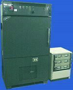

Low
Temperature Operating Life (LTOL) Test
The
Low Temperature Operating Life (LTOL) test is a test
performed to determine the reliability of devices under
low temperature
conditions over an
extended
period of time. It
consists of subjecting the parts to a specified
bias or electrical
stressing, for a specified
amount of time, and at a specified low temperature.
The LTOL test is basically just the low temperature equivalent of the HTOL
test. In fact, both tests are documented by JEDEC in a single
standards spec, JEDEC
JESD22-A108.
There
are several requirements when powering up a device during LTOL. As
in HTOL, the device must not be overstressed nor should it go to thermal
runaway. The datasheet limits of the manufacturer must not be exceeded.
The stressing must also be
continuous, and should only be interrupted at
interim readpoints if required. The biasing configuration may be
static, pulsed, or even dynamic.
Unless
otherwise specified, the ambient temperature for LTOL test shall not
exceed the maximum limit of
-10 deg C.
|
 |
|
Fig.
1.
Example of a
Low Temperature Burn-in Oven |
As
in HTOL, electrical testing must be performed within
96 hours after the
bias to the device has been removed. A device is considered an LTOL failure if it fails to meet the applicable procurement
specification.
The
LTOL test is usually performed to check for
hot carrier effects,
a commonly encountered failure mechanism accelerated by high voltages
and low temperatures.
Reliability
Tests:
Autoclave
Test or PCT; Temperature
Cycling; Thermal
Shock;
THB;
HAST;
HTOL;
LTOL;
HTS; Solder
Heat Resistance Test (SHRT);
Other
Reliability Tests
See Also:
Reliability
Engineering;
Reliability Modeling; Qualification
Process; Failure
Analysis;
Package Failures; Die
Failures
HOME
Copyright
©
2001-Present
www.EESemi.com.
All Rights Reserved.